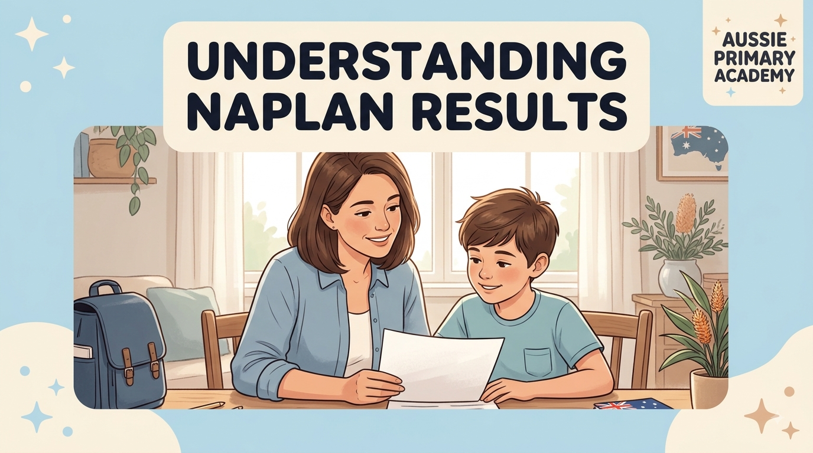

NAPLAN 2026 · Parent Guide
Got Your Child's 2026 NAPLAN Results? Here's What to Do Next
A calm, practical guide for Year 3 and Year 5 parents on what the results mean and simple next steps at home — without pressure.

Results day can feel big. Whether the report looks better, worse or roughly as expected, many parents are left wondering: What does this actually mean, and what should I do now?
This guide is written for Australian parents of Year 3 and Year 5 students. It explains the proficiency levels in plain English, helps you decide when a conversation with the teacher is useful, and suggests calm, practical ways to support your child at home — without turning the results into a source of stress.
What the four proficiency levels mean
From 2023 onwards, NAPLAN results are reported against four proficiency levels rather than the old bands. These levels describe how a student’s result compares with the expectations for their year level.
- Exceeding — The student is working above the expected standard for their year.
- Strong — The student is working at the expected standard.
- Developing — The student is working towards the expected standard and may benefit from extra support in some areas.
- Needs Additional Support — The student is working below the expected standard and is likely to need more targeted help.
These levels are not a ranking against other students. They are a snapshot of how the student performed on that particular set of tests on those particular days.
One result is not the whole story
NAPLAN is a useful data point, but it is only one data point. It does not measure curiosity, kindness, effort, creativity or how a child learns best. A lower result does not mean a child is “behind forever”, and a higher result does not mean everything is fine and no further support is needed.
Teachers see your child every day. The school report and classroom observations usually give a fuller picture than any single national test.
When to talk to the teacher
A calm conversation with the classroom teacher is often the most useful next step, especially if:
- the result was lower than you expected based on school reports
- the result is in the Developing or Needs Additional Support range
- you have noticed similar struggles with homework or reading at home
- you simply want to understand what the school is already doing and how you can help
You do not need to wait for a formal parent-teacher interview. A short email or a quiet word at pick-up is enough to start the conversation.
How to support your child at home without pressure
If the results suggest a particular area needs attention, short, regular, low-pressure practice is usually more effective than long, stressful sessions.
- Keep sessions short (10–20 minutes).
- Focus on one skill at a time rather than “more NAPLAN practice”.
- Use everyday materials and free printable worksheets that match the exact skill.
- Praise effort and progress, not just correct answers.
- Stop while the child is still willing — ending on a positive note matters.
Free printable practice that matches common gaps
Aussie Primary Academy offers free, Australian Curriculum-aligned worksheets that many families use for gentle, targeted practice after NAPLAN results arrive.
Year 3: place value to 10,000, addition and subtraction strategies, fractions, inference skills, and main idea and key details.
Year 5: Browse the full Year 5 worksheet collection for Maths, English and Science practice matched to common NAPLAN skill areas.
You can also browse all free worksheets. These are designed for everyday home use — not as formal test preparation.
What not to do
- Do not treat the result as a final judgement on your child.
- Do not start intensive daily testing or “NAPLAN bootcamp” at home.
- Do not compare your child’s results with other children’s in front of them.
- Do not ignore a result that is clearly lower than expected — a quiet conversation with the teacher is better than silence.
Frequently asked questions
What do the NAPLAN proficiency levels mean?
NAPLAN results are reported against four proficiency levels: Exceeding, Strong, Developing, and Needs Additional Support. These describe how a child’s results compare with expectations for their year level, not a ranking against other students.
My child’s NAPLAN result was lower than expected. Should I be worried?
One result is one snapshot, not the full picture of your child’s ability. It’s worth a calm conversation with their teacher about what the result shows and what steps, if any, might help — without treating it as a verdict.
How can I support my child after NAPLAN without adding pressure?
Focus on short, low-pressure practice in specific skill areas rather than general study, keep the tone relaxed, and celebrate effort. Free printable worksheets are a simple way to target a specific gap without formal tutoring.
Final Thoughts
However the results landed this year, they’re one part of a much longer learning journey — not a final answer about your child. A calm conversation with their teacher, a little targeted practice, and time usually do more good than any single reaction in the days after results arrive.
At Aussie Primary Academy, we’re proud to help Australian families with free, curriculum-aligned worksheets that make everyday practice simple, whatever a NAPLAN result does or doesn’t say.